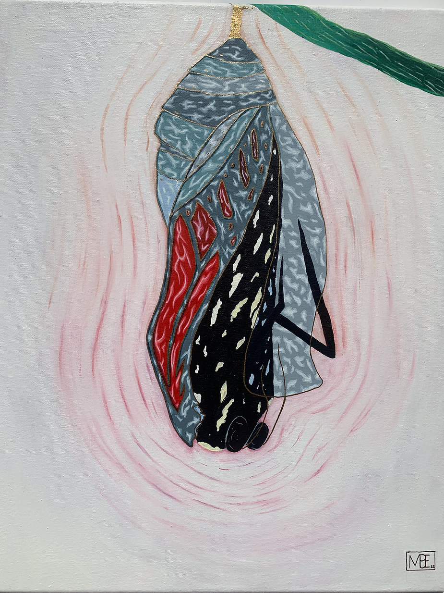
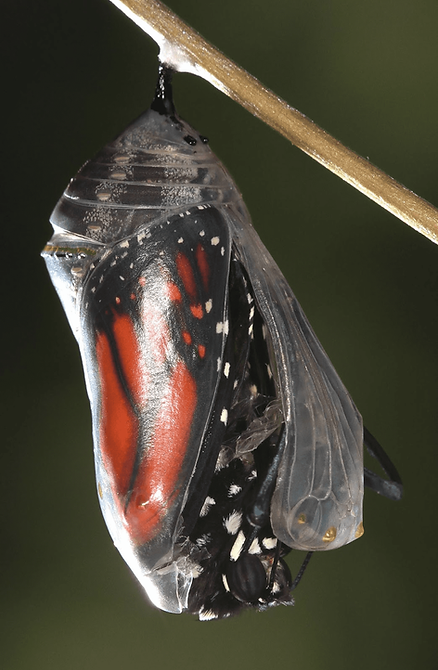
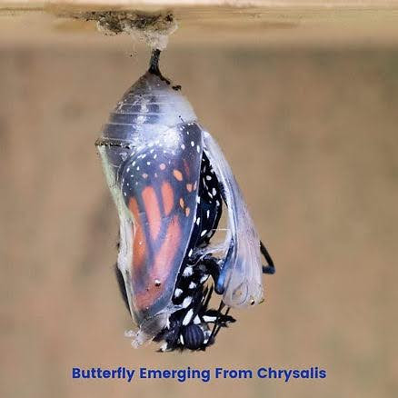
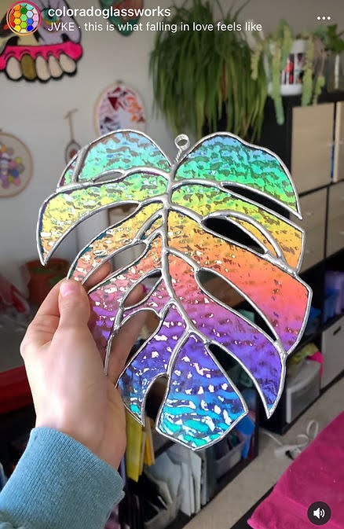

“emergence”
/ɪˈməːdʒ(ə)ns/
noun
the process of becoming visible after being concealed.
–Oxford Languages
To truly end the suffering is to accept the change. Blindly. Bravely. With no expectations besides the “end”. This is where freedom begins.
There’s never any talk of the chrysalis arc of the cycle… it’s always the beginning and the end but never the unfiltered realities of the in-between. Never any mention of the most absolute and gut wrenching suffering you might ever go through in your entire life.
As a young caterpillar you settle in, settle down with visions of floating on the wind on your earned wings; you’re beautiful and life is as it should be in your eyes. At ease and excited for the future you ease into the resting place for the old you, relaxed and ready to go through the changes in your coffin and womb–chrysalis.
This is not as it seems? The shapeshifting to face the world on your own terms is not as easy as you thought it would be, right? Still you hold onto your vision as your insides disintegrate… you became nothing. Nothing becomes everything when you realise that you have to build the vision from it; sifting blindly through the endless and often painful parts of everything that is your universe in that moment in an attempt to create the path to that vision of you floating on the wind. You finally understand the phrase “searching for a needle in a haystack” but you stick to it anyway, confused and terrified facing the threats of life in your incredibly vulnerable state.
A wind blown too strongly, a thunderstorm gone wrong, a careless child playing too freely. You made it through. You survived it all whilst trying to piece together your vision with nothing more than who you are.
You did it, the chrysalis cracks at last. The cold coffin for your soul, sealed by superficiality to contain your warmth… your light. You get a feel of your future now that the frigidly filtered glamour is broken.
Fresh to the world around you, recovering into your new-self, the air seems warmer than you remembered. It’s easier to breathe, the air can finally touch your soul. Recovering into your new-self you find your wings to be weak. It frustrates you as you try to fly. Why is it still so hard? You made the changes. You went through hell to get there and yet it was still so hard. You don’t give up though, you went through all of that trauma and grew those wings from it in the cold, of course they’re not ready to fly in the sun just yet. Push too hard and you’ll destroy them, give up and it would’ve all been for nothing so you pace yourself and wait on the wind that was meant for you.
You finally catch that wind that feels like it was destined for you, a written in the stars kind of perfection, at last you understand that you built your wings blindly for this wind. Every lesson you learned was to help you float on this wind. You coast on your wind, perfectly in tune with the world around you, the changes that you made in that chrysalis to fall into flow with nature has finally shown their purpose.
In that moment you suddenly realise that you are free and that true freedom lies in having the choice to change. True freedom is being able to choose to emerge.
The Painting

The Painting Explained
The chrysalis
The chrysalis in this painting was painted in a variance of cool greys. These fragments were painted from reference of stained glass pieces, representative of the often cold and colourless beauty of the ideologies that are implemented from infancy. The fragments that never quite blended together were forced together with gold, the tempting and blinding adhesive that holds the fragile things together.
Each highlight on each fragment contains four layers: the four liberal arts and sciences that complete the world, the classical four elements, the four seasons. Each layer equally as relevant to the fabric of reality.
The butterfly
The monarch butterfly consumes the poisonous milkweed during their larval stage and it is then stored in its body indefinitely. The poison, cardiac glycosides, causes predators to vomit, but it rarely ever causes death. The nourishment during development serves a purpose in the entire life cycle whether it realises this or not.
The brightly red hued wings of the Monarch Butterfly acts as a “warning sign” to deter hungry predators.
The colour red was the focus of this painting because holistic healing begins at the root chakra which is represented by the colour red. Located at the base of the spine, the pelvic floor, and the first three vertebrae, the root chakra is responsible for your sense of safety and security on this earthly journey. The word Muladhara breaks down into two Sanskrit words: Mula meaning “root” and Adhara, which means “support” or “base.” An unbalanced root chakra is often associated with anxiety disorders, fears and nightmares. Balancing this first energy centre creates a solid foundation for the chakra above it to be healed. Red was also important in this painting due to the fact that the lowest wavelength observed in the visible light spectrum is red. It was only fitting symbolically that the first painting in this series be red since it is the lowest limit of the human eye’s colour perception.
The stem
The styling of the stem was completely intuitive and was left open to interpretation given that the stem in itself is representative of the universe, the creator, God etc. That one entity that supported the development of the butterfly without interfering, it was a constant.
The background
The white background is a composition of all of the aspects of visible light being reflected, this energy used to fuel the necessary change. The varying hues of red pulsating through the white at the crack of the glamour, freeing the energy that was pent up into the surrounding.
What are your interpretations? How does my perspective help you fine tune your own?
Reference images



First published: Here on March 17, 2022